انبعاثات بصرية وفوق بنفسجية نبضية من نجم نابض ملي ثانية متنامٍ
الملخص
يُعتقد أن النجوم النيوترونية ذات الدوران بالملي ثانية والمجالات المغناطيسية الضعيفة تكتسب دورانها السريع خلال طور يدوم 0.1-1 غيغاسنة، تتراكم فيه عليها مادة تحمل زخماً زاويًا من نجم مرافق منخفض الكتلة[1]. وعلى الرغم من عمليات البحث الواسعة، لم تُرصد دوريات متماسكة صادرة من الأغلفة المغناطيسية لنجوم نيوترونية متراكمة إلا عند طاقات الأشعة السينية[2]، وفي 10% فقط من الأنظمة المعروفة حالياً[3]. نورد هنا رصد نبضات بصرية وفوق بنفسجية متماسكة عند فترة الأشعة السينية في النظام الثنائي العابر منخفض الكتلة للأشعة السينية SAX J1808.43658، وذلك خلال فورة تراكم حدثت في أغسطس 2019[4]. كان النجم النابض، وقت الرصد، محاطاً بقرص تراكم، وأظهر نبضات في الأشعة السينية، وكان لمعانه متوافقاً مع تراكم موجَّه مغناطيسياً على النجم النيوتروني. تعجز نماذج التراكم الحالية عن تفسير لمعان النبضات البصرية وفوق البنفسجية معاً؛ والأرجح أن هذه النبضات يقودها إشعاع السنكرو-انحناء [5, 6] داخل الغلاف المغناطيسي للنجم النابض أو خارجه مباشرة. ويعني هذا التفسير أن تسريع الجسيمات يمكن أن يحدث حتى أثناء استمرار تراكم الكتلة، كما يفتح آفاقاً جديدة لدراسة النبضات البصرية/فوق البنفسجية المتماسكة من النجوم النيوترونية المتراكمة السريعة الدوران في الثنائيات منخفضة الكتلة للأشعة السينية.
INAF-Osservatorio Astronomico di Roma, Via Frascati 33, I-00078 Monte Porzio Catone (Roma), Italy
INAF-Istituto di Astrofisica e Planetologia Spaziali, Via Fosso del Cavaliere 100, I-00133 Roma, Italy
Sapienza Università di Roma, Piazzale Aldo Moro 5, I-00185 Roma, Italy
Università dell’Insubria, Dipartimento di Scienza e Alta Tecnologia, Via Valleggio 11, I-22100 Como, Italy
INAF-Osservatorio Astronomico di Brera, Via Bianchi 46, I-23807 Merate (LC), Italy
Institute of Space Sciences (ICE, CSIC), Campus UAB, Carrer de Can Magrans, E-08193, Barcelona, Spain
Institut d’Estudis Espacials de Catalunya (IEEC), Gran Capità 2-4, E-08034, Barcelona, Spain
Università degli Studi di Palermo, Dipartimento di Fisica e Chimica, via Archirafi 36, I-90123 Palermo, Italy
Università degli Studi di Cagliari, Dipartimento di Fisica, SP Monserrato-Sestu km 0.7, I-09042 Monserrato, Italy
INAF-Osservatorio Astronomico di Capodimonte, Salita Moiariello 16, I-80131 Napoli, Italy
Università di Bologna, Dipartimento di Fisica e Astronomia, Via Gobetti 93/2, I-40129 Bologna, Italy
INAF-Osservatorio di Astrofisica e Scienze dello Spazio di Bologna, Via Gobetti 93/3, I-40129 Bologna, Italy
Fundación Galileo Galilei - INAF, Rambla José Ana Fernández Pérez 7, E-38712 Breña Baja (TF), Spain
Università di Catania, Dipartimento di Fisica e Astronomia, Sezione Astrofisica, Via Santa Sofia 78, I-95123 Catania, Italy
INFN-Sezione di Roma 1, Piazzale Aldo Moro 5, I-00185 Roma, Italy
Center for Astro, Particle, and Planetary Physics, New York University Abu Dhabi, PO Box 129188, Abu Dhabi, UAE
INAF-Istituto di Astrofisica Spaziale e Fisica Cosmica Milano, Via A. Corti 12, I-20133, Milano, Italy
Janusz Gil Institute of Astronomy, University of Zielona Góra, ul Szafrana 2, 65-265, Zielona Góra, Poland
Institució Catalana de Recerca i Estudis Avançats (ICREA), E-08010 Barcelona, Spain
Faulkes Telescope Project, School of Physics and Astronomy, Cardiff University, The Parade, Cardiff, CF24 3AA, Wales, UK
Astrophysics Research Institute, Liverpool John Moores University, 146 Brownlow Hill, Liverpool L3 5RF, UK
أسهم هؤلاء المؤلفون بالتساوي في هذا العمل
المؤلفون المسؤولون عن المراسلات (البريد الإلكتروني: filippo.ambrosino@inaf.it, arianna.miraval@inaf.it)
يُعتقد أن أنظمة الثنائيات منخفضة الكتلة للأشعة السينية (LMXB)، التي تضم نجماً نيوترونياً ذا مجال مغناطيسي ضعيف ( G)، هي أسلاف النجوم النابضة الراديوية بالملي ثانية. وقد أُثبتت الصلة التطورية بين الفئتين أولاً عبر رصد نبضات سريعة متماسكة في الأشعة السينية، تنشأ من تراكم المادة على القطبين المغناطيسيين للنجم النيوتروني وما يرافق ذلك من تأثير المنارة في عدة ثنائيات LMXB عابرة[2, 7]. وجاء الدليل الحاسم مع اكتشاف مجموعة صغيرة من النجوم النابضة الثنائية الملي ثانية الانتقالية التي تتناوب بين حالات تعمل بالطاقة الدورانية وأخرى تعمل بطاقة التراكم[8, 9]. تُعد النبضات السريعة المتماسكة وتطور ترددها في أنظمة النجوم النيوترونية المتراكمة أداة أساسية لتحديد معلمات الثنائي وعزوم التراكم، ودراسة خصائص التفاعل بين القرص والغلاف المغناطيسي والتراكم الموجَّه مغناطيسياً، واشتقاق قيود على معادلة حالة المادة فائقة الكثافة[10]. ومن خلال رصد السبين والتقويم الفلكي المداري لثنائيات LMXB وتحديدهما بدقة، وخصوصاً ألمعها وأقربها، يصبح من الممكن أيضاً إجراء عمليات بحث مضبوطة ذات حساسية أعلى عن موجات الجاذبية عند ضعف تردد دوران النجم النيوتروني. وقد ثبت أن النبضات السريعة المتماسكة المدفوعة بطاقة التراكم نادرة المنال: ففي أكثر من ثلاثة عقود لم تُرصد عند طاقات الأشعة السينية إلا في 22 [11, 12, 3] من أصل 190 من ثنائيات LMXB التي تحتوي نجوماً نيوترونية[13]، وكلها أنظمة عابرة تبلغ لمعاناتها العظمى بضعة في المئة من حد إدنغتون. ولم تُرصد النبضات البصرية حتى الآن إلا من النجم النابض الملي ثانية الانتقالي PSR J1023+0038[14]، خلال حالة قرص خافتة في الأشعة السينية[15]. ويُعتقد أن نبضات الأشعة السينية والنبضات البصرية في هذا النظام، وهي شبه متزامنة تماماً، تنشأ من إشعاع سنكروتروني في الصدمة داخل الثنائية خارج نصف قطر أسطوانة الضوء مباشرة، حيث تلتقي ريح الجسيمات النسبية المطرودة من النجم النابض بقرص التراكم[15, 16, 17].
يُعد الثنائي العابر منخفض الكتلة للأشعة السينية SAX J1808.43658 أول نجم نابض ملي ثانية متراكم في الأشعة السينية (AMXP) اكتُشف[2]. يدور النجم النابض بفترة مقدارها 2.49 ms، ويدور حول نجم مرافق [18] بفترة مدارية قدرها 2 hr[7]؛ ويقع على مسافة[19] تقارب 3.5 kpc. منذ اكتشافه في 1996، شهد المصدر تسع فورات مدة كل منها نحو شهر، بلغ خلالها لمعان مصدر الأشعة السينية[20] عادةً بضعة 1036 erg s-1، انطلاقاً من مستوى سكون[21] قدره erg s-1. كما يؤدي ارتفاع معدل تدفق الكتلة، المسبب لفورات الأشعة السينية، إلى زيادة سطوع المصدر في فوق البنفسجي (UV) والبصري بمقادير 4 و 3.5، نتيجة تعزيز تشعيع النجم المرافق ومناطق القرص الخارجية [22] بالأشعة السينية الصادرة من منطقة القرص الداخلية ومن النجم النيوتروني[20, 23].
في صيف 2019، شهد SAX J1808.43658 فورة أخرى[4]، وبلغ لمعاناً عظمياً في نطاق 0.5–10 keV قدره erg s-1 في أغسطس 12، بعد صعود دام يوماً. ثم أعقب ذلك اضمحلال، وابتداءً من أغسطس 24 حدثت تذبذبات في اللمعان بطول يوم بين و erg s-1. تابعت أرصاد متكررة بأداة توقيت الأشعة السينية (XTI) على متن Neutron Star Interior Composition Explorer (NICER) تطور الفورة ونبضات الأشعة السينية عن كثب (انظر الشكل 1)، وأتاحت قياسات محسنة لفترة دوران النجم النيوتروني ومعلماته المدارية (انظر الطرائق و[4]). في أغسطس 7، خلال طور صعود الفورة، حين كان لمعان الأشعة السينية erg s-1، رصدنا المصدر مدة hr باستخدام الفوتومتر الفلكي السريع السيليكوني (SiFAP2)[14] العامل في نطاق 320–900 nm، والمثبت على Telescopio Nazionale Galileo (TNG) في لا بالما. وأُجري رصد بطول 2 ks في أغسطس 28 باستخدام مطياف التصوير للتلسكوب الفضائي (STIS)، العامل في نطاق فوق بنفسجي قدره nm على متن Hubble Space Telescope (HST)، عندما كان لمعان الأشعة السينية erg s-1 في المراحل المتذبذبة الأخيرة من الفورة (انظر الشكل 1).
تُعرض أطياف كثافة قدرة فورييه للمنحنيات الضوئية البصرية وفوق البنفسجية ذات الدقة الزمنية العالية في الشكل 2. وفي كلتا الحالتين تظهر قمة ضيقة عند تردد دوران النجم النيوتروني 401 Hz، باحتمال حدوث عشوائي في خانة تردد واحدة قدره و في البيانات البصرية وفوق البنفسجية، على التوالي.
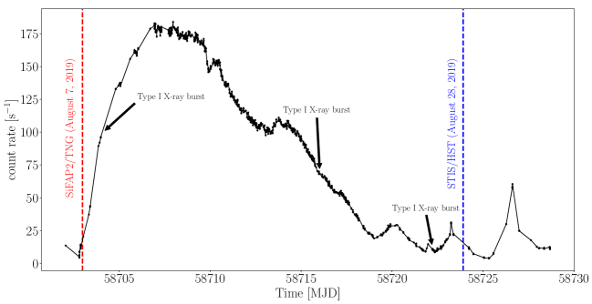
تظهر المنحنيات الضوئية النبضية البصرية وفوق البنفسجية، المطوية عند فترة دوران الأشعة السينية الواردة في الجدول 1 والتي تعرض شكلاً شبه جيبي أحادي القمة، في المربعات الداخلية في الشكل 2. كانت سعة الجذر التربيعي المتوسط، بعد طرح الخلفية، للنبضات البصرية (0.550.06)%، بما يقابل لمعاناً قدره erg s-1 (وكان اللمعان البصري الكلي عند 325–690 nm هو erg s-1). في أرصاد XTI/NICER التي غطت زمن رصد SiFAP2/TNG، امتلكت نبضات الأشعة السينية سعة rms أكبر بمقدار مرة (4.80.3%)، ولمعاناً أعلى من النبضات البصرية بعامل ، مقداره erg s-1 (انظر الطرائق للتفاصيل). ومن اللافت أن منحنى النبض البصري كان مزاحاً في الطور بمقدار (أو ms زمنياً) بالنسبة إلى منحنى الأشعة السينية، أي أنه كان عملياً في طور معاكس. ونلاحظ أن PSR J1023+0038 لا يُظهر هذه السمة، إذ إن منحنيي النبض البصري ونبض الأشعة السينية فيه شبه متوافقين في الطور (تأخر زمني قدره s)[15].
كانت النبضات المتماسكة فوق البنفسجية المرصودة أثناء رصد STIS/HST أقوى نسبياً من النبضات البصرية المرصودة قبل ذلك بـ 3 أسابيع: فقد أدت سعة rms البالغة (2.60.7)% إلى لمعان نبضي عند 165–310 nm مقداره erg s-1. وبالمقابل، فإن نبضات الأشعة السينية المرصودة خلال رصد NICER المنفذ بعد ساعات قليلة امتلكت سعة rms مقدارها (5.70.9)%، وتضمنت لمعاناً نبضياً في الأشعة السينية أعلى بعامل ، قدره erg s-1. وبسبب اللايقين الكبير في التوقيت المطلق لبيانات HST ( s، مراسلة خاصة مع مكتب مساعدة HST)، تعذر تحديد الطور النسبي لمنحنيي فوق البنفسجي والأشعة السينية.
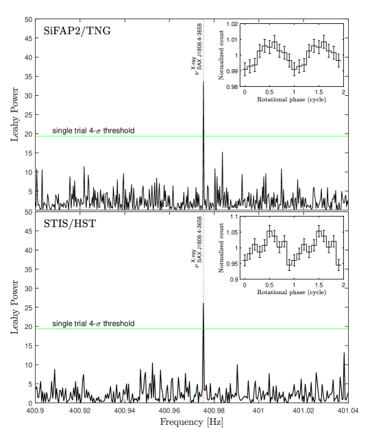
Parameter X-ray Ultraviolet Optical Right Ascensiona (, J2000) 18h 08m 27s.62 – – Declinationa (, J2000) 36∘ 58′ 43.3′′ – – Validity Range [MJD] – Reference epoch [MJD] 58715.0 – – Time System TDB TDB TDB Planetary ephemeris DE405 DE200 DE405 Spin frequency () [Hz] 400.975209660(9) – – Spin frequency ()b [Hz] 400.975210179(63) – 400.975225(72)⋆ Spin frequency ()c [Hz] 400.975209618(36) 400.97517(10)⋆ – Spin frequency first derivative () [Hz s-1] – – Spin frequency second derivative () [Hz s-2] – – Orbital period () [s] 7249.1572(14) – – Time of ascending node () [MJD] 58715.0220987(32) – – Projected semi-major axis [lt-s] 0.0628099(35) – – /d.o.f 550/378 – –
a قيم مأخوذة من [24].
b رصد أُجري في أغسطس 7، 2019 ( = 58702.9382176 MJD(UTC)) باستخدام SiFAP2/TNG.
c رصد أُجري في أغسطس 28، 2019 ( = 58723.9080081 MJD(UTC)) باستخدام STIS/HST.
⋆ حُصل عليه بتقنية البحث بالطي الحقبي.
إن وجود نشاط فورات الأشعة السينية من النوع I، إلى جانب لمعانات الأشعة السينية التي تتجاوز قدرة فقدان الدوران المقاسة في السكون[4] ( erg s-1) بما يصل إلى رتبتين عشريتين، يبرهن أن فورات SAX J1808.43658 تغذيها عملية تراكم الكتلة. كذلك، في زمن رصدي SiFAP2/TNG وSTIS/HST، كان لمعان الأشعة السينية أعلى من قدرة فقدان الدوران بعاملين مقدارهما و4 (مع أن لمعان الأشعة السينية النبضي كان أدنى). علاوة على ذلك، تطورت الخصائص الطيفية والزمنية للأشعة السينية للمصدر تطوراً معتدلاً ومتصلاً عبر تأرجح لمعان الفورة (وكذلك في الفورات السابقة) نزولاً إلى erg s-1، من غير أن تُظهر أي دليل على انتقالات إلى نظام غير متراكم[4]. ومن المرجح أن نبضات الأشعة السينية ولّدها تراكم موجَّه على القطب المغناطيسي. لذلك نستنتج أن نبضات SAX J1808.43658 البصرية/فوق البنفسجية، المرصودة في شبه تزامن مع نبضات الأشعة السينية، هي أول نبضات يُتيقن من رصدها أثناء طور التراكم لنجم نيوتروني يدور بالملي ثانية. وفيما يلي نناقش أصلها المحتمل.
يمكن استبعاد الانبعاث الحراري من حلقات دافئة متحدة المركز تحيط بالأغطية القطبية؛ فحتى مع افتراض مساحة باعثة كبيرة ( km2)، ينبغي أن تبلغ درجة الحرارة قيماً عالية على نحو غير واقعي (1 MeV) كي تولد التدفقات البصرية وفوق البنفسجية المرصودة. ولكي لا تُطمس الإشارات المتماسكة بفعل تأخر زمن عبور الضوء، يجب أن يكون إسقاط منطقة الانبعاث على خط البصر أصغر من km، حيث إن هي سرعة الضوء في الخلاء. وإذا نشأت النبضات فوق البنفسجية/البصرية من انبعاث سميك بصرياً أو من إعادة معالجة، فإن اللمعان النبضي البصري البالغ erg s-1 يقتضي درجة حرارة مقدارها keV، حيث تمثل حجم منطقة الانبعاث، ولمعاناً بولومترياً قدره erg s-1، مما يجعل هذا النموذج غير قابل للاستمرار. وفضلاً عن ذلك، يحد الحجم الأقصى لهذه المنطقة كمية الطاقة التي يمكن إعادة إصدارها عند إعادة معالجة نبضات الأشعة السينية في المنطقة الخارجية من القرص ( cm) إلى erg s-1 في نطاق 320900 nm، حتى في الحالة الأكثر ملاءمة لميل قدره 90∘. وتزداد صعوبة هذا التفسير إذا حدثت إعادة المعالجة أو تحرير الطاقة في مادة سميكة بصرياً ضمن مناطق ذات أحجام تقارب المقاييس المميزة لـ SAX J1808.43658، أي نصف قطر النجم النيوتروني ( km)، أو الحد الداخلي للقرص القريب من نصف قطر التزامن الدوراني ( km)، أو نصف قطر أسطوانة الضوء ( km)؛ فهذه المناطق كلها أصغر من km.
ستصدر الإلكترونات الساخنة في منطقة ما بعد الصدمة من عمود التراكم فوتونات سيكلوترونية عند طاقة أساسية مقدارها eV، وذلك لمجال مغناطيسي سطحي قدره SAX J1808.43658 يساوي G [25]. إذا امتد النظام السميك بصرياً حتى التوافقي السيكلوتروني n-th، نتج طيف رايلي-جينز حتى الطاقة المقابلة[26]. بالنسبة إلى SAX J1808.43658، يكون اللمعان الأقصى المتوقع erg s-1 في نطاق 320–900 nm، و erg s-1 في نطاق 165–310 nm (انظر الطرائق)، أي أدنى بأكثر من رتبتين عشريتين من القيم المقاسة. لذلك يمكن أيضاً استبعاد أن يكون انبعاث السيكلوترون ذاتي الامتصاص في عمود التراكم مسؤولاً عن التدفق النبضي البصري/فوق البنفسجي لـ SAX J1808.43658، ما لم يكن الانبعاث في هذه النطاقات موجهاً بشدة، وهو أمر غير مرجح في ضوء دورة عمل النبضة الكبيرة. كما أن التوجيه القلمي الناتج من انخفاض عتامة السيكلوترون للفوتونات المنتشرة على طول خطوط المجال[27] يُتوقع عند طاقات أدنى بكثير من ، أي تحت النطاق البصري الذي رصدنا فيه. ولا تنطبق هذه القيود إذا كان الانبعاث النبضي البصري/فوق البنفسجي ناتجاً من عملية انبعاث متماسكة[28] يمكن أن تتجاوز شدتها النوعية شدة الانبعاث الحراري كثيراً. غير أننا نلاحظ أن الانبعاث المتماسك من النجوم النابضة المدفوعة بالدوران يتصف بطيف راديوي شديد الانحدار شبيه بقانون قدرة، ولا يُتوقع أن يعمل عند ترددات أعلى بكثير.
وبالقياس إلى النجوم النابضة المعزولة المدفوعة بالدوران[29]، قد يسبب إشعاع السنكرو-انحناء[6, 5] الصادر عن إلكترونات وبوزيترونات نسبية يسرّعها الغلاف المغناطيسي الدوار للنجم النيوتروني النبضات البصرية وفوق البنفسجية في SAX J1808.43658. في هذا التفسير، تكون كفاءة تحويل SAX J1808.43658 قدرة فقدان الدوران إلى لمعان نبضي فوق بنفسجي وبصري هي و، على التوالي؛ والأولى أكبر بنحو 100 مرة من كفاءة نباض السرطان في نطاقي فوق البنفسجي (165–310 nm) و[30] (انظر الطرائق). إن هذه الكفاءة العالية أكبر بكثير مما يُرصد عادة في النجوم النابضة المعزولة المدفوعة بالدوران، وتشير إلى وجود عملية فيزيائية تآزرية.
تتنبأ نماذج قائمة على محاكاة هيدروديناميكية مغناطيسية[31] بأن خطوط المجال المغناطيسي للنجم النيوتروني المقترنة بالقرص داخل نصف قطر التزامن الدوراني تلتوي سريعاً، وتُدفع إلى الخارج، وتُجبر على الانفتاح[32]؛ وهذه ظاهرة لا تكون ممكنة إلا في AMXPs ذات أقراص عالية الانتشارية المغناطيسية. في هذه الصورة لا يثبط وجود قرص التراكم الآلية المدفوعة بالدوران؛ بل تزداد قدرتها (مقارنة بالنجوم النابضة عديمة الأقراص) بسبب فتح خطوط مجال مغناطيسي إضافية وما يقابله من ازدياد في الفيض عبر سطح أسطوانة الضوء. ويؤدي ذلك إلى زيادة عزم فقدان الدوران المؤثر في النجم النيوتروني وإلى ريح كهرومغناطيسية أقوى للنجم النابض[31]. ومن المتوقع معدل صاف لفقدان الدوران من رتبة Hz s-1 في حالة SAX J1808.4–3658. ونلاحظ أن عزماً ومعدلاً لفقدان الدوران بحجم مماثل قد ينشآن من خطوط مجال مغناطيسي تخترق القرص خارج نصف قطر التزامن الدوراني[33]. إذا كانت اللمعانات البصرية وفوق البنفسجية النبضية العالية لـ SAX J1808.43658 ناتجة من آلية مدفوعة بالدوران معززة، فلا بد أن تتعايش هذه الآلية (أو تتناوب على مقاييس زمنية أقصر مما يلزم لكشف النبضات بالأجهزة الحالية) مع الآلية المدفوعة بالتراكم التي تنتج نبضات الأشعة السينية. وبدلاً من ذلك، يمكن أن تتعزز أيضاً قدرة ما يسمى بـ striped wind[34] بفعل التفاعل نفسه بين القرص والغلاف المغناطيسي. في هذا النموذج، يُنقل جزء من قدرة فقدان دوران النجم النابض بعيداً على هيئة موجات منخفضة التردد مكونة من شرائط من مجال مغناطيسي حلقوي؛ وتنتشر هذه البنى على طول المستوى الاستوائي للنجم النابض وتتحول إلى ريح من بلازما ممغنطة نسبية خارج نصف قطر أسطوانة الضوء عبر إعادة الاتصال المغناطيسي. وفي هذا الإطار، تنشأ النبضات البصرية وفوق البنفسجية من SAX J1808.43658 من إشعاع سنكروتروني موجه تصدره جسيمات مشحونة ساخنة تتحرك قرب نصف قطر أسطوانة الضوء[35]. هنا، يكون إشعاع السنكروترون رقيقاً بصرياً في نطاقي فوق البنفسجي والبصري، إذ يحدث الامتصاص الذاتي للسنكروترون دون[36] 0.04 eV. ومع ذلك يُتوقع انبعاث بصري/فوق بنفسجي نبضي من إشعاع السنكروترون على مسافات 600 km من النجم النيوتروني، نظراً إلى أن زمن تبريد السنكروترون أقصر من . وقد تتعزز كفاءة هذه العملية عند صدمة النهاية بين ريح النجم النابض وقرص التراكم[15, 16, 17].
تتمثل سمة لافتة في الانزياح بنصف دورة بين النبضات البصرية ونبضات الأشعة السينية من SAX J1808.43658. ومن المغري النظر في احتمال أن يحدث تراكم المادة على قطب واحد فقط من النجم النيوتروني، مولداً إشارة الأشعة السينية النبضية، بينما يُثبط التراكم على الجانب المقابل فتولد آلية مدفوعة بالدوران نبضة بصرية/فوق بنفسجية في طور معاكس. وقد يجعل مجال مغناطيسي ثنائي القطب منزاح المركز عن مركز النجم النيوتروني هذا السيناريو ممكناً.
يُظهر اكتشاف النبضات البصرية وفوق البنفسجية أثناء فورة التراكم لنجم نابض ملي ثانية في الأشعة السينية أن آليات تسريع الجسيمات يمكن أن تعمل حتى في أنظمة يكون فيها الغلاف المغناطيسي مغموراً ببلازما متراكمة خلال جزء معتبر من الزمن على الأقل. ويفتح ذلك أيضاً نافذة رصدية جديدة لدراسة النجوم النيوترونية المتراكمة في الثنائيات منخفضة الكتلة للأشعة السينية، إذ إن الحساسية الأعلى التي توفرها أرصاد القياس الضوئي السريعة في النطاقين البصري وفوق البنفسجي قد تتيح كشف نبضات متماسكة في مصادر وأنظمة بقيت فيها نبضات الأشعة السينية غير مرصودة.
0.1 المراقبة البصرية TNG.
جُمعت مجموعة البيانات البصرية لـSAX J1808.43658 باستخدام الفوتومتر الفلكي السريع السيليكوني (SiFAP2[37]، وقت تقديري من مدير TNG، الباحث الرئيس Papitto) المثبت على بؤرة Nasmyth A في تلسكوب INAF 3.58 m Telescopio Nazionale Galileo (TNG)، الواقع في مرصد Roque de los Muchachos في لا بالما (جزر الكناري، إسبانيا). ويُعد SiFAP2، النسخة المطورة من SiFAP[38, 39]، فوتومتراً فائق السرعة ثنائي القناة يعمل في النطاق البصري (320–900 nm) وقادراً على وسم زمن وصول (ToA) كل فوتون بدقة زمنية قدرها 8 ns. يوفر التوقيت المطلق جهاز تجاري للنظام العالمي لتحديد المواقع (GPS) عبر إشارة نبضة في الثانية (PPS)، بدقة اسمية قدرها 25 ns على التوقيت العالمي المنسق (UTC)، لكنها تتدهور إلى أقل من 60 s بسبب دالة نقل إلكترونيات SiFAP2. واستُخلصت هذه القيمة من أرصاد لنجم Crab النابض لأغراض المعايرة[15]. أجرينا رصداً واحداً بطول 3.3 ks لـSAX J1808.43658 بدأ في أغسطس 7، 2019 عند 22:31 (UTC)، خلال أبكر مراحل الفورة. ويُعرض منحنى الضوء البصري للمصدر، المجموع بواسطة SiFAP2، في الشكل 3. لم نستخدم أي مرشح أثناء هذا التشغيل. وكان ارتفاع التلسكوب فوق الأفق 24 deg، بما يقابل كتلة هوائية 2.5، بينما تراوحت ظروف الرؤية بين 0.5 و0.9 arcsec (عند السمت). وكان القمر على بعد زاوي 47 deg من الهدف، مما زاد مساهمة الخلفية بنسبة 70%. وخلال الاقتناء قسنا أيضاً إشارة خلفية السماء، مع أخذ معدل العد المظلم البالغ 1.8 103 s-1 للمستشعرات في الحسبان، وذلك بتحريك التلسكوب 10 arcsec بعيداً عن الهدف باتجاه الشرق مرتين أثناء الرصد، لمدة نحو 30 s في كل مرة. وحصلنا على معدل عد خلفية متوسط BKGTNG = 3495386 s-1، يمثل مساهمة تزيد على 90% من معدل العد الكلي (RTNG = 38560.66.5 s-1) المجموع عند توجيه التلسكوب نحو SAX J1808.43658. كما رُصد في الوقت نفسه نجم مرجعي، TYC 74036551 (RA = 18:07:56.38، DEC = 36:55:07.35، = 12.19 mag)، يقع على مسافة 432 arcsec من SAX J1808.43658، لرصد التغيرات الجوية والتحقق من غياب إشارات دورية زائفة ناجمة عن الضجيج الأداتي عند تردد دوران النجم النابض. وكما حدث في جولات رصد سابقة، انجرفت ساعة SiFAP2 بمقدار ms قياساً إلى الزمن المقاس بإشارتي نبضة في الثانية من نظام GPS استُخدمتا لتعليم بداية الرصد ونهايته. وصححنا أزمنة الوصول بافتراض أن الانجراف تطور وفق دالة خطية في الزمن. وقد أثبت هذا الإجراء فعاليته سابقاً في استعادة تردد النبض لكل من نباض Crab والنجم النابض بالميلي ثانية PSR J1023+0038[14, 15]. وأظهرت الاختبارات المختبرية أن الارتعاش الحراري لساعة نظام SiFAP2 يمكن إهماله بأمان، لأن لايقينه النسبي لفترات دوران بالميلي ثانية أصغر من قياساتنا بعشرات المرات[14]. ثم أُحيلت أزمنة وصول الفوتونات المستخلصة بهذه الطريقة إلى مركز الكتلة الباري للنظام الشمسي (نظام الزمن TDB) باستخدام موضع النظير البصري المقدم في [24] والموقع الجغرافي المركزي لـTNG (X = 5327447.4810 m, Y = 1719594.9272 m, Z = 3051174.6663 m)، مع التقويم الفلكي JPL DE405.
0.2 المراقبة فوق البنفسجية.
رصدنا SAX J1808.43658 بمطياف التصوير للتلسكوب الفضائي (STIS، GO/DD-15987، الباحثة الرئيسة Miraval Zanon) على متن Hubble Space Telescope (HST) ابتداءً من 28 أغسطس 2019 عند 21:47 (UTC) خلال المرحلة الأخيرة من الفورة. ويُعرض منحنى الضوء فوق البنفسجي للمصدر، الملتقط بواسطة STIS، في الشكل 3. أُجري الرصد الطيفي في نمط TIME-TAG بدقة زمنية 125 s لمدة تقارب 2.2 ks بواسطة كاشف NUV-MAMA. واستخدمنا المحزوز G230L المزود بشق 520.2 arcsec، مما يضمن قدرة تحليل طيفية 500 عبر المجال الاسمي (الرتبة الأولى). كان معدل العد الكلي الذي جمعته الأداة RHST = 2016.740.95 s-1، مع مساهمة خلفية تقارب 30% (BKGHST = 653.360.54 s-1). وقدرت إشارة الخلفية باختيار الفوتونات في قنوات شق STIS الواقعة خارج منطقة المصدر (انظر قسم تحليل التوقيت) ثم حساب متوسطها. ثم طُبعت القيمة الناتجة إلى العدد الكلي لقنوات الشق.
0.3 أرصاد الأشعة السينية.
رصد جهاز توقيت الأشعة السينية[40] (XTI) على متن Neutron Star Interior Composition Explorer[41] (NICER) فورة SAX J1808.43658[4] من 30 يوليو حتى 16 سبتمبر 2019 بزمن تعريض كلي قدره 387.7 ks. وعولجت الأحداث في نطاق 0.2–12 keV وفُحصت باستخدام HEASOFT الإصدار 6.28 طبقنا معايير التنظيف والترشيح القياسية، فاخترنا فقط الفواصل الزمنية التي كان فيها انحراف التوجيه عن موضع المصدر الاسمي أصغر من 0.015 deg، وكان المصدر بعيداً عن حافة الأرض بما لا يقل عن 30 deg (وبما لا يقل عن 40 deg عندما تكون الأرض مضاءة بالشمس)، وكانت محطة الفضاء الدولية خارج شذوذ جنوب الأطلسي. وصُححت أزمنة وصول الفوتونات لحركة مركز الكتلة الباري للنظام الشمسي (نظام الزمن TDB) باستخدام موضع النظير البصري[24] وتقويم JPL الفلكي DE405. ويُعرض منحنى ضوء الأشعة السينية لفورة المصدر من 2019، أغسطس 7 إلى أغسطس 31 في الشكل 1. وأزلنا فورات الأشعة السينية من النوع I التي وقعت في الفواصل الزمنية 58704.81059-58704.81186 MJD و58716.08876-58716.09104 MJD و58722.41759-58722.41921 MJD.
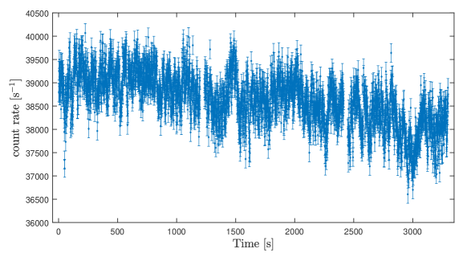
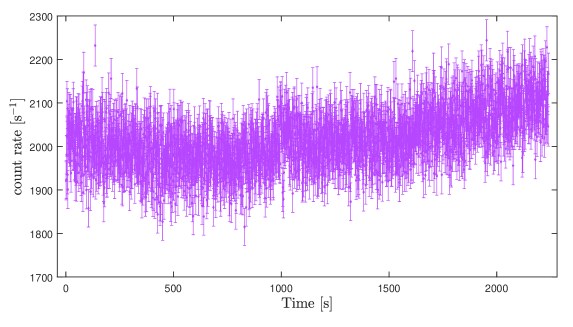
0.4 تحليل التوقيت.
قِسنا تردد دوران النجم النابض في الأشعة السينية ومعلماته المدارية بتحليل الأرصاد التي أجراها NICER بين أغسطس 7 وأغسطس 31 (أي MJD 58702–58726). وصححنا أزمنة الوصول باستخدام المعلمات المدارية المقاسة سابقاً[4]. ثم طوينا مقاطع بطول 1 ks من بيانات NICER في 16 حاويات طورية حول تقدير أولي لفترة النبض[4]. وملاءمنا منحنيات النبض بمكون جيبي واحد، ونمذجنا تطور أطوار النبض بدالة تتكون من كثيرة حدود من الرتبة الثالثة وحدود ناتجة من تصحيحات للمعلمات المدارية (انظر، مثلاً، [42])، فحصلنا على حل التوقيت الوارد في الجدول 1. ويتصف هذا الحل بقيمة قدرها 550 لعدد 378 من درجات الحرية، ما يشير إلى ملاءمة غير مقبولة رسمياً. غير أن اعتماد كثيرات حدود من رتبة أعلى لم يحسن جودة الملاءمة تحسناً معتبراً. ولا يظهر أي اتجاه واضح في البواقي المبينة في اللوحة السفلى من الشكل 4، ونعزو ارتفاع قيمة المختزلة للملاءمة إلى ضوضاء توقيت الطور المعروفة بتأثيرها في الأطوار المرصودة من هذا المصدر ومن AMXPs أخرى[12]. ولا يهدف حل توقيت الأشعة السينية المشتق هنا إلا إلى البحث عن نبضات بصرية/فوق بنفسجية، أما نمذجة مكون ضوضاء التوقيت هذا فتتجاوز نطاق هذا البحث. ومع ذلك، نلاحظ أن Bult وآخرين[4] اشتقوا حل توقيت بقياس أطوار النبض في كل فاصل زمني جيد متصل (أطول عادة من 1 ks)، وباعتماد إما كثيرة حدود من الرتبة الثانية أو نموذج طور معدل بالتدفق في محاولة لنمذجة ضوضاء التوقيت، وحصلوا على قيم للملاءمة مشابهة للقيمة الواردة هنا. وتفسر النماذج المختلفة التي استخدمها أولئك المؤلفون الفروق الطفيفة بين تقويمهم الفلكي والتقويم الذي حصلنا عليه. وعلى أي حال، تحققنا من أن نتائجنا لا تتغير عند استخدام تقويمهم الفلكي.
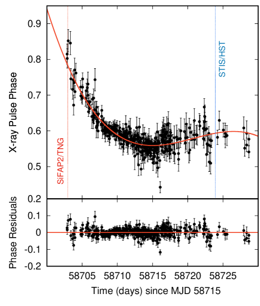
نظراً إلى أن رصد TNG استغرق 3.3 ks، كان تباعد ترددات فورييه المستقلة Hz. وهذا أكبر خشونة بمقدار 5000 مرة من لايقينات تردد الدوران السيني المقدرة عند حقبة رصد TNG ( Hz؛ انظر الجدول 1). وبعد تطبيق التصحيح إلى مركز الكتلة الباري وإزالة تضمين الحركة المدارية للنجم النابض، لم يكن يلزم البحث إلا في تردد تجريبي واحد ضمن مجموعة بيانات TNG لاختبار وجود إشارة متماسكة عند التردد نفسه المحدد من تحليل بيانات الأشعة السينية. وحسبنا طيف كثافة القدرة لفورييه لمنحنى ضوء TNG، وقسنا قدرة مطبعة وفق Leahy[43] قدرها عند تردد Hz. أما احتمال التجربة المنفردة المرتبط بتقلبات الضوضاء البيضاء العشوائية فهو . ونلاحظ أنه لم تُعثر قمة مهمة عند تردد دوران النجم النابض المتوقع لا في طيف كثافة القدرة لمنحنى الضوء الذي لم يطبق عليه تصحيح الحركة المدارية، ولا في منحنى ضوء النجم المرجعي. وبذلك كانت المعرفة الدقيقة بالتقويم الدوراني والمداري ضرورية لكشف التضمين المتماسك البصري (وفوق البنفسجي) عند فترة الدوران. ولتحسين قياس تردد النبض البصري، أجرينا بحث طي حقبي[44] باستخدام 10 حاويات طورية وخطوة فترة مقدارها s وقِسنا قيمة مربع كاي مع أفضل فترة ملاءمة s. وحُسبت لايقينية 1- الواردة بين قوسين[44] باستخدام المعادلة ، حيث إن زمن التعريض الكلي لرصد TNG البصري. وأجرينا أيضاً اختبار غير المحوّى[45] بافتراض شكل نبض جيبي صرف ()، فحصلنا على قيمة = 34.3 مرتبطة بأفضل فترة طي s. وتتوافق هذه القيمة مع المقدرة من بيانات الأشعة السينية ضمن اللايقينات. وقد عرضنا توزيع مربع كاي المحسوب مع أفضل نموذج غاوسي ملائم في الشكل 5. ثم طوينا منحنى الضوء البصري لـTNG باستخدام معلمات نبض الأشعة السينية، ونمذجنا منحنى النبض الناتج بهذه الطريقة (الشكل الداخلي في الشكل 2) بمكون جيبي واحد ذي سعة rms مقدارها . وبعد أخذ الخلفية في الحسبان (انظر أعلاه)، قدرنا سعة المصدر rms بأنها . وأظهر طي منحنى ضوء SiFAP2/TNG بالتردد الدوراني نفسه، وكذلك منحنى ضوء XTI/NICER المستخرج في الفترة بين أغسطس 7 عند 19:18:49 وأغسطس 8 عند 00:34:55 UTC (مجموعة فرعية من معرفات الأرصاد 2050260109 و2050260110)، فرق طور قدره ، يقابل تأخراً زمنياً قدره ) ms (انظر الشكل 6). وقدر [15] دقة توقيت مطلقة لـSiFAP2 قدرها s، في حين أن قيمة NICER المقابلة هي s؛ وكلتاهما أقل بكثير من اللايقين المؤثر في التأخر المقاس. ولتقدير أثر أي لايقين نسبي متبق في التوقيت ناجم، مثلاً، عن لايقين اعتماد انجراف ساعة SiFAP2 على الزمن، افترضنا أن ترددي الإشارتين البصرية والسينية متساويان تماماً، وقدرنا لايقين الطور الناتج من انجراف ترددي مقداره يساوي خطأ القياس ( Hz؛ انظر الجدول 1)، فحصلنا على تأخر أقصى 0.4 ms. وستؤكد الأرصاد المستقبلية التي تضمن تغطية مدار كامل دلالة تأخر النبض ومقداره.
وُجدت مؤشرات إلى تغيرات طفيفة في سعة النبض البصري، وإن كانت دلالتها الإحصائية منخفضة. فقد تراوحت سعة الجذر التربيعي المتوسط المرصودة، أي غير المطروحة منها الخلفية، بين (0.070.01)% و(0.040.01)% على فواصل طولها 0.8 ks. وغطى رصد TNG البصري نحو نصف الفترة المدارية، من الطور 0.04 إلى 0.49، أي من بعد العقدة الصاعدة بقليل (الطور 0) إلى قرب العقدة الهابطة (الطور 0.5). كُشفت الإشارة المتماسكة في جميع الأطوار، مع أن أكبر سعة rms رُصدت عندما كان النجم النابض قريباً من العقدة الصاعدة. وبسبب الضعف الذاتي للإشارة، كان رصد TNG البصري أقصر من أن يسمح لنا باشتقاق المعلمات المدارية للنبض البصري من تحليل توقيت النبض في تلك المجموعة من البيانات. ولتأكيد ارتباط الإشارة البصرية المتماسكة بالنجم النابض في SAX J1808.43658، حددنا تغير شدة الإشارة بتغيير المعلمات المدارية المستخدمة في تصحيح أزمنة وصول الفوتونات قياساً إلى القيم المقاسة من تحليل نبضات الأشعة السينية. وأعدنا تشغيل بحث دورية الطي الحقبي لمنحنيات الضوء، مع السماح لحقبة العقدة الصاعدة () ونصف المحور الأكبر المسقط () بالتغير على شبكة قيم تفصل بينها s و lt-s. كما سُمح لفترة الطي بالتغير. وترد توزيعات قيم مربع كاي المرتبطة بأفضل فترة طي، والمحسوبة بتغيير و كل على حدة، في الشكل 7 والشكل 8، على التوالي. وأجرينا ملاءمة غاوسية لكلا توزيعي مربع كاي، فحصلنا على موقعي المركزيين عند s و lt-ms. ومع ذلك، ننبه إلى أن تغطية دورة مدارية كاملة تبدو ضرورية لاستخلاص استنتاجات راسخة بشأن دلالة أي إزاحة محتملة بين منحنيي النبض.
حللنا بعد ذلك أحداث فوق البنفسجي المستخرجة من الرصد المنفذ باستخدام STIS. وصححنا موضع قنوات الشق بالاستعانة بدالة خارجية مخصصة (https://github.com/Alymantara/stis_photons)، ثم اخترنا الأحداث، أي أزمنة الوصول (ToAs)، المنتمية إلى قنوات الشق ضمن المجال 9911005 مع استبعاد الحواف، لعزل إشارة المصدر وتقليل مساهمة الخلفية. واخترنا أيضاً المجال الموجي 165–310 nm لتجنب المساهمة الضوضائية الناتجة من ضعف استجابة محزوز G230L عند الأطوال الموجية الطرفية. وصُححت قائمة أزمنة الوصول الجيدة إلى SSB باستخدام مهمة ODELAYTIME (وهي روتين فرعي متاح في حزمة البرمجيات IRAF/STDAS) وباستعمال التقويم الفلكي JPL DE200. طبقنا على مجموعة بيانات STIS الإجراء نفسه الذي استُخدم سابقاً مع بيانات SiFAP2 للبحث عن الانبعاث فوق البنفسجي النبضي من SAX J1808.43658. وبعد إزالة التشكيل المداري لأزمنة وصول فوتونات فوق البنفسجي بتصحيحها من تأخيرات Rømer الناجمة عن الحركة المدارية، حسبنا طيف كثافة القدرة لفورييه. ووجدنا قدرة مطبعة وفق Leahy[43] قدرها عند تردد Hz، مما يدل على نبضات فوق بنفسجية متماسكة قرب تردد الدوران المتوقع للنجم النابض، مع احتمال تجربة منفردة قدره . وكما في مجموعة البيانات البصرية، لم نجد قمة مهمة عند تردد الدوران المتوقع في طيف كثافة القدرة لمنحنى الضوء غير المصحح مدارياً. ثم أجرينا بحث طي حقبي باستخدام حاويات طورية وبدقة فترة s. قِسنا قيمة مربع كاي ، وأفضل فترة ملاءمة s، وهي متفقة جيداً، ضمن اللايقينات، مع الفترة المستخرجة من بيانات الأشعة السينية. وحُسبت لايقينية 1- الواردة بين قوسين كما في مجموعة البيانات البصرية. وعرضنا توزيع مربع كاي المحسوب مع أفضل نموذج غاوسي ملائم في الشكل 5. كما أجرينا اختبار غير المحوّى بمكون ، فاشتققنا قيمة = 29.0 مرتبطة بأفضل فترة طي s. ثم طوينا بيانات HST فوق البنفسجية عند أفضل فترة مستخرجة من تحليل توقيت الأشعة السينية (انظر الجدول 1)، ورسمنا منحنى النبض بعد طرح الخلفية في الشكل الداخلي من الشكل 2. ووصفنا شكل التضمين فوق البنفسجي بمكون فورييه واحد ذي سعة كسرية rms مقدارها A = (2.60.7)%؛ غير أن الصعود إلى قمم التضمين كان أبطأ قليلاً من الهبوط.
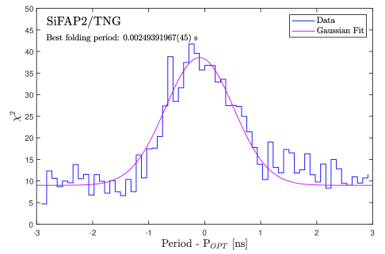
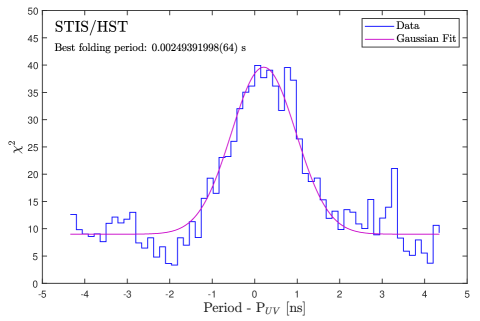
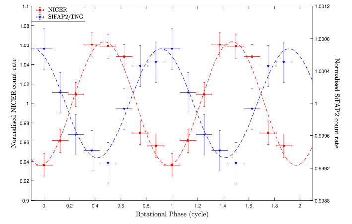
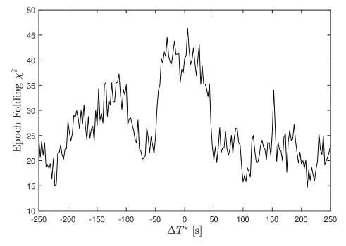
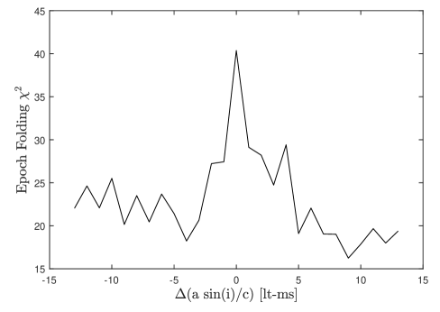
0.5 توزيع الطاقة الطيفية.
يوضح الشكل 9 توزيع الطاقة الطيفية (SED) للانبعاث الكلي والانبعاث النبضي في النطاقات البصرية وفوق البنفسجية والسينية خلال أرصاد أغسطس 7، 2019. وصُححت المقادير البصرية وفوق البنفسجية من الانقراض بين النجمي باستخدام العلاقة التجريبية[46] cm-2، حيث إن cm-2 هي كثافة عمود الهيدروجين على خط البصر نحو SAX J1808.43658[47]. واستخدمنا منحنيات الانقراض في [48] لاستخراج الاحمرار في حزم مختلفة[49]. وأُخذت بيانات الرصد البصري في نطاقات ( في نظام Vega و في نظام AB) بواسطة تلسكوب Faulkes Telescope South ذي القطر 2-m في Siding Spring بأستراليا وتلسكوبات Las Cumbres Observatory (LCO) الآلية ذات القطر 1-m في تشيلي وجنوب أفريقيا وأستراليا (انظر [50, 51]). وحُسبت مقادير Faulkes/LCO باستخدام خط معالجة بيانات ‘X-ray Binary New Early Warning System’ (XB-NEWS؛ انظر [52, 53] للتفاصيل). ولتقدير التدفق البصري لـSAX J1808.43658 عند حقبة رصد SiFAP2، استوفينا بيانات منحنى الضوء LCO/Faulkes. ورُصدت فورة SAX J1808.43658 أيضاً بتلسكوب الأشعة فوق البنفسجية والبصري (UVOT[54]) على متن مرصد Neil Gehrels Swift[55] باستخدام مرشحات مختلفة في فوق البنفسجي. وكُشف النظير فوق البنفسجي في عشر أرصاد متتالية أُجريت بين أغسطس 6 وسبتمبر 14. وكان القدر المصحح من الاحمرار، المقاس بمرشح UVOT.UVM2 في أغسطس 7، ذي الطول الموجي المركزي 224.6 nm والعرض الكامل عند نصف القيمة العظمى 49.8 nm، مساوياً 14.40.1 mag (نظام Vega). وبالنسبة إلى نطاق الأشعة السينية، استخرجنا الطيف بعد طرح الخلفية من ملف الأحداث نفسه المستخدم أعلاه لتقييم فرق الطور بين نبضات الأشعة السينية والنبضات البصرية، مستعملين أداة نمذجة الخلفية nibackgen3C50 المتاحة في https://heasarc.gsfc.nasa.gov/docs/nicer/tools/nicer_bkg_est_tools.html (بزمن تعريض كلي قدره ks). وأسندنا إلى الطيف أحدث إصدارات مصفوفة إعادة التوزيع الخاصة بـNICER (“nixtiref20170601v002.rmf”) وملف الاستجابة المساعدة (“nixtiaveonaxis20170601v004.arf”)، ثم جمعناه بحيث يحتوي كل قناة طاقة على 200 عدّاً على الأقل. وأُجري التحليل الطيفي بحزمة Xspec[56] (الإصدار 12.11.1) واقتصر على نطاق الطاقة بين 0.5 و5 keV، حيث كان المصدر فوق الخلفية.
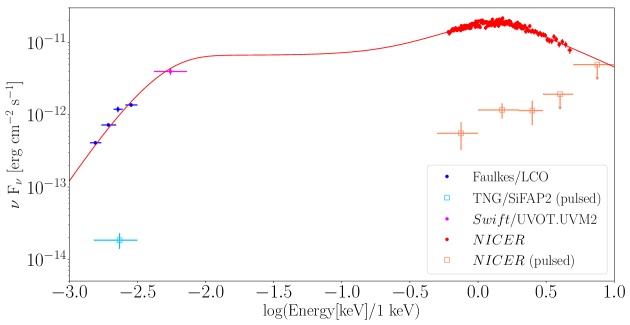
يلائم توزيع الطاقة الطيفية، من الأطوال الموجية البصرية وفوق البنفسجية إلى الأشعة السينية، نموذج متصل يتكون من مجموع جسم أسود، ممثلاً بالمكون bbodyrad في Xspec، ومكون كومتنة ممثلاً بالمكون nthcomp[57]. ولأخذ آثار الامتصاص الكهروضوئي بالمادة المتعادلة في الوسط بين النجمي في الحسبان، أدرجنا في الملاءمة الطيفية نموذج Tuebingen–Boulder، مع اعتماد مقاطع التأين الضوئي من [58] والوفرة الكيميائية من [59]. وثُبتت كثافة عمود الهيدروجين المكافئة عند cm-2 في الملاءمة الطيفية[60, 47]. وترد النتائج في الجدول 2. وفي هذه الحالة تبلغ أفضل قيمة ملاءمة لدرجة حرارة الجسم الأسود eV، مع نصف قطر مقدر لمنطقة الانبعاث الكروية قدره km لمسافة إلى المصدر 3.5 kpc. وبالنسبة إلى المكون nthcomp، ثبّتنا درجة حرارة الإلكترونات ومؤشر الفوتونات عند أفضل القيم الملائمة المستخرجة من طيف الأشعة السينية عريض النطاق ( مثبتة عند 50 keV ومؤشر الفوتونات مثبت عند 1.9[61]، بما يقابل عمقاً بصرياً يقارب 2 لمنطقة الكومتنة). وحصلنا على درجة حرارة فوتونات بذرية قدرها eV، في فرضية أن طيف الفوتونات البذرية جسم أسود. وبذلك نستطيع تقدير نصف قطر منطقة الإصدار الكروية لطيف الفوتونات البذرية باستخدام العلاقة المعطاة في [62]. ونجد نصف قطر cm، وهو متوافق مع الحجم المستنتج لقرص التنامي في هذا النظام. وقد يشير ذلك إلى أن مصدر الفوتونات البذرية للكومتنة قد يأتي من المناطق الخارجية للنظام، التي قد تسهم في معظم الانبعاث البصري/فوق البنفسجي للمصدر. ويتفق ذلك مع التصور المقبول على نطاق واسع بأن معظم الانبعاث البصري/فوق البنفسجي في أنظمة الثنائيات السينية منخفضة الكتلة، سواء احتوت ثقباً أسود أم نجماً نيوترونياً، ينتج في المناطق الخارجية من قرص التنامي نتيجة لإعادة معالجة الأشعة السينية[63, 64, 65].
| Parameter | Value |
|---|---|
| Absorption column density () | cm-2 (fixed) |
| Black-body temperature () | eV |
| Radius of black-body emission region ()(a) | km |
| Electron cut-off temperature ()(b) | keV (fixed) |
| Asymptotic power-law photon index ()(c) | (fixed) |
| Seed-photon temperature () | eV |
| Normalisation () | |
| Luminosity ()(d) | erg s-1 |
| Reduced chi-squared, | (152) |
| Null-hypothesis probability | 0.097 |
معلمات مشتقة من النمذجة الطيفية للبيانات التي حصلت عليها NICER/XTI وFaulkes/LCO وSwift-UVOT في أغسطس 7، 2019 قرب حقبة أرصاد SiFAP2. وتُعرض لايقينات كل معلمة عند مستوى ثقة 1.
(a) قُيم نصف قطر منطقة انبعاث الجسم الأسود بافتراض مسافة للمصدر[19] قدرها kpc.
(b-c) لا يسمح نطاق الطاقة الضيق المعتمد للنمذجة الطيفية (0.5–5 keV) بفرض قيود محكمة على معلمات المكون المكومتن. لذلك ثُبتت درجة حرارة القطع الإلكترونية في الملاءمات الطيفية عند keV، وهي قيمة قابلة للمقارنة مع القيم المقاسة عادة في الأطياف عريضة النطاق للنباضات الراديوية السينية المتنامية بالميلي ثانية (AMXPs)، بما في ذلك SAX J1808.43658[47]؛ كما ثُبت مؤشر فوتونات قانون القدرة المقارب عند ، أي القيمة المقاسة باستخدام رصد بالقمر NuSTAR في 10–11 أغسطس[61].
(d) لمعان الأشعة السينية. قُيم في نطاق 0.5–10 keV باستخدام نموذج الالتفاف cflux في Xspec، مع افتراض مسافة[19] قدرها 3.5 kpc وانبعاث متناحٍ.
للحصول على تفسير فيزيائي أوضح للانبعاث عريض النطاق من SAX J1808.43659، لاءمنا توزيع الطاقة الطيفية بنموذج يأخذ في الحسبان انبعاث قرص تنامٍ مبتور يعرّضه للإشعاع تدفق تنامٍ حار مكومتن (diskir[23] في ترميز Xspec). في هذا النموذج يتألف انبعاث الأشعة السينية من إشعاع حراري صادر عن القرص ومن ذيل صلب تنتجه كومتنة فوتونات بذرية رخوة في بلازما حارة من إلكترونات عالية الطاقة. ويعترض جزءاً من هذا الإشعاع المناطق الخارجية للقرص، حيث يُعاد تجهيزه وإصداره في النطاقين البصري وفوق البنفسجي. غالباً ما يصف هذا النموذج جيداً الانبعاث عريض النطاق للثنائيات السينية منخفضة الكتلة الساطعة. وثُبتت كثافة العمود مرة أخرى عند cm-2 في الملاءمة الطيفية. حصلنا على وصف مقبول إحصائياً للبيانات، بمربع كاي مختزل قدره لعدد 152 من درجات الحرية (d.o.f.). وترد النتائج في الجدول 3. وفقاً لهذا النموذج، يملك القرص الداخلي درجة حرارة ذاتية، أي غير مشععة، قدرها 200 eV ونصف قطر km، مستنتجاً من تطبيع النموذج وبافتراض زاوية ميل 50∘ كما استُخرجت من نمذجة منحنى الضوء متعدد النطاقات في السكون باستخدام تقنية سلسلة ماركوف مونت كارلو[18]. ويوفر القرص الداخلي الفوتونات البذرية التي تكومتنها سحابة الإلكترونات الحارة قرب النجم النيوتروني، وربما عمود التنامي، فتنتج المتصل المكومتن الرئيس المرصود في نطاق الأشعة السينية؛ وقد ثُبتت درجة حرارة الإلكترونات لهذا المكون عند القيمة المستخرجة من نمذجة طيف الأشعة السينية[47]، بينما تُرك مؤشر الفوتونات حراً في التغير (أفضل قيمة ملاءمة ). ويعاد تجهيز كسر من هذا التدفق الصلب في القرص الخارجي، الذي يبلغ نصف قطره نحو ضعف نصف قطر القرص الداخلي، أي cm. وهذه القيمة قابلة للمقارنة مع حجم فص روش للنجم النيوتروني، ومن ثم مع حجم القرص. لدراسة أصل الانبعاث النبضي في النطاق البصري/فوق البنفسجي، استخرجنا أيضاً توزيع الطاقة الطيفية النبضي في أغسطس 7–8، 2019. وبالنسبة إلى نطاق الأشعة السينية، قدرنا أولاً سعات الجذر التربيعي المتوسط النبضية بعد طرح الخلفية في نطاقات الطاقة 0.5–1 و1–2 و2–3 keV، إضافة إلى الحدود العليا 3 في النطاقين 3–5 و5–10 keV. ثم حسبنا التدفقات غير الممتصة للأشعة السينية في نطاقات الطاقة نفسها باستقراء أفضل نموذج ملاءمة للانبعاث الكلي، النبضي وغير النبضي، وضربناها في القيم المقابلة، أو الحدود العليا، لسعة الجذر التربيعي المتوسط للنبض للحصول على التدفقات النبضية المتكاملة. ثم ضربنا القيم المقدرة في نسبة طاقة منتصف المجال إلى عرض مجال الطاقة لاشتقاق التدفقات النبضية، وحدودها العليا، بوحدات . ولتحويل التدفقات البصرية النبضية إلى وحدات ضربنا التدفقات المصححة من الاحمرار في العرض الكامل عند نصف القيمة العظمى للمرشح (89 nm و84 nm و158 nm و154 nm لمرشحات و و و، على التوالي؛ وحولنا قدر المرشح من نظام AB إلى نظام Vega). وبعد ذلك جمعنا التدفقات في النطاقات الأربعة المختلفة للحصول على قيمة واحدة للتدفق النبضي تغطي نطاق عمل SiFAP2 (320–900 nm)، وضربنا هذه القيمة في السعة الكسرية للنبض البصري. وحصلنا بهذه الطريقة على 4 نقاط بيانات لتوزيع الطاقة الطيفية (انظر الشكل 9)، وهو عدد غير كاف لنمذجة ذات معنى. لذلك اختبرنا فقط نماذج ذات معلمتين، مثل الجسم الأسود، والانبعاث الحراري من القرص، والفرملة الإشعاعية، وقانون القدرة. وتنتج ملاءمة نموذج قانون قدرة لنقاط توزيع الطاقة الطيفية للانبعاثين البصري والسيني النبضيين قيمة مربع كاي مختزل لعدد 2 من درجات الحرية، واعتماداً دالياً من الشكل .
| Parameter | Value |
|---|---|
| Absorption column density () | cm-2 (fixed) |
| Temperature of the unilluminated inner disc () | eV |
| Asymptotic power-law photon index () | |
| Electron cut-off temperature ( | keV (fixed) |
| Luminosity ratio ( | |
| Fraction of reprocessed emission ( | 10 % (fixed) |
| Fraction of reprocessed emission ( | % |
| Inner disc radius ()(d) | km |
| Inner radius of illuminated disc ( | 1.1 (fixed) |
| Outer disc radius ( | |
| Luminosity ()(g) | erg s-1 |
| Reduced chi-squared, | (152) |
| Null-hypothesis probability | 0.828 |
معلمات مشتقة من النمذجة الطيفية للبيانات التي حصلت عليها NICER/XTI وFaulkes/LCO وSwift-UVOT في أغسطس 7، 2019 قرب حقبة أرصاد SiFAP2. وتُعطى لايقينات كل معلمة عند مستوى ثقة 1، أما الحدود العليا فتُعرض عند مستوى ثقة 3.
(a) لا يسمح نطاق الطاقة الضيق المعتمد للنمذجة الطيفية (0.5–5 keV) بفرض قيود صارمة على هذه المعلمة. لذلك ثُبتت في الملاءمات الطيفية عند keV، وهي قيمة قابلة للمقارنة مع القيم المقاسة عادة في الأطياف عريضة النطاق للنباضات الراديوية السينية المتنامية بالميلي ثانية (AMXPs)، بما في ذلك SAX J1808.43658[47].
(b) النسبة بين لمعان المكون المكومتن ولمعان القرص غير المضاء.
(c) الكسر من التدفق البولومتري الذي يعترضه القرص الداخلي () والخارجي () ويعيد معالجته. وقد ثُبت الأول عند 10 % في الملاءمات الطيفية.
(d) نصف القطر الداخلي لقرص التنامي. وقد قُيم بافتراض مسافة للمصدر[19] قدرها kpc واعتماد عامل تصحيح لوني[66]. ويمثل ميل القرص.
(e) نصف قطر منطقة القرص الداخلية التي تضيئها الهالة. وقد ثُبت عند 1.1 في الملاءمات الطيفية.
(f) النسبة بين نصفي قطر القرص الخارجي والداخلي.
(g) لمعان الأشعة السينية. قُيم في نطاق 0.5–10 keV باستخدام نموذج الالتفاف cflux في Xspec، مع افتراض مسافة[19] قدرها 3.5 kpc وانبعاث متناحٍ.
0.6 نماذج.
إن طاقة فوتون السيكلوترون الأساسية التي تطلقها الإلكترونات في المجال المغناطيسي لـSAX J1808.43658 عند قاعدة عمود التنامي ( G [67, 25, 68]) هي = 11.6 ( G) keV eV. وعند هذه الطاقات، يمكن تقدير اللمعان النبضي فوق البنفسجي والبصري الناتج عن انبعاث سيكلوتروني سميك بصرياً كما في [26] ، حيث إن و هما الترددان الحدّيان في نطاق الطاقة SiFAP2 أو STIS/G230L، و درجة حرارة الإلكترونات. ويمثل مساحة البقعة الساخنة للغطاء القطبي المتنامي[69]، حيث = 10 km نصف قطر النجم النيوتروني، و نصف قطر الترافق الدوراني، أي المسافة التي تساوي عندها السرعة الكبلرية للمادة في القرص سرعة الغلاف المغناطيسي للنجم النيوتروني. ولا تتجاوز مساحة منطقة التنامي 100 km2. ويبلغ اللمعان السيكلوتروني الأقصى، باستخدام [70] = 100 keV، للإلكترونات في عمود التنامي erg s-1 في نطاق 320-900 nm و erg s-1 في نطاق 165-310 nm. وهذه القيم أدنى برتب مقدار من اللمعان النبضي المرصود في فوق البنفسجي والبصري، ولا تدعم سيناريو انبعاث السيكلوترون في هذين النطاقين.
ينطوي سيناريو بديل على وجود قرص التنامي من دون أن يمنع آلية القدرة الدورانية من العمل. وبذلك يمكن أن تنتج النبضات البصرية وفوق البنفسجية من نجم نابض مدفوع بالدوران، كما في النجوم النيوترونية المعزولة[71, 5, 72]. يمكن تقدير معدل الفقد طويل الأمد لطاقة الدوران بأنه erg s-1، حيث إن عزم قصور النجم النيوتروني، و تردد دورانه (انظر الجدول 1)، و المشتقة الزمنية الأولى لتردد الدوران[4]. وتؤدي مقارنة هذه القيمة باللمعان النبضي المرصود إلى كفاءات مغناطيسية-دورانية لـSAX J1808.43658 قدرها و في النطاق ، مع حساب عند زمن أرصادنا. ولم تُرصد نبضات بصرية وفوق بنفسجية إلا في خمسة نجوم نابضة مدفوعة بالدوران[30, 73]، وكلها معزولة وأبطأ دوراناً وأصغر عمراً وذات حقول مغناطيسية عالية ( G). وقد حُددت كفاءة تحويل قدرة فقدان الدوران إلى لمعان بصري/فوق بنفسجي في PSR B054069 وفي نباض Crab[14, 30]. وتفوق تقديراتنا بكثير كفاءتي نباض Crab البالغتين في النطاق 165–310 nm و في النطاق . وتستدعي هذه الكفاءات العالية في SAX J1808.43658 وجود عملية فيزيائية، غير معروفة حتى الآن، قادرة على تعزيز الانبعاث المدفوع بالدوران في حضور قرص تنامٍ.
0.7 مقارنة بين SAX J1808.4–3658 و PSR J1023+0038.
قبل SAX J1808.43658، لم تكن النبضات البصرية السريعة قد كُشفت إلا من النجم النابض الانتقالي بالميلي ثانية PSR J10230038[14] بينما كان في حالة قرص خافتة في الأشعة السينية، عند لمعان أشعة سينية متوسط في النطاق (0.5–10 keV) قدره erg s-1. وكان اللمعان البصري النبضي مرتفعاً أيضاً في تلك الحالة ( erg s-1)، مع أن المصدر كان يطلق قدرة فقدان دوران قدرها erg s-1 في حالة النجم النابض الراديوي. وكانت النبضات البصرية ونبضات الأشعة السينية شبه متطابقة في الطور، ولم تُرصد إلا خلال نمط لمعان الأشعة السينية المسمى high، الذي يمضي فيه المصدر من الزمن، لكنها اختفت فجأة في نمط اللمعان الأدنى، مما يشير إلى عملية فيزيائية مشتركة كامنة[15]. ويُعتقد أن النبضات البصرية ونبضات الأشعة السينية المرصودة من PSR J10230038 تنشأ من إشعاع سنكروتروني في الصدمة داخل الثنائية، خارج نصف قطر أسطوانة الضوء مباشرة، حيث تلتقي رياح الجسيمات النسبية المقذوفة من النجم النابض بقرص التنامي[15, 16, 17]. كُشفت النبضات البصرية من SAX J1808.43658 في مرحلة متوسطة من الفورة، عندما لم يكن لمعان الأشعة السينية قد بلغ ذروته بعد. ومع ذلك، تجاوز لمعان الأشعة السينية المقابل لمعان PSR J1023+0038 بنحو رتبة مقدار واحدة ( erg s-1). وتأخرت النبضات البصرية عن نبضات الأشعة السينية بمقدار ms، أي إنها كانت تقريباً في الطور المضاد. ولم تُظهر الخصائص الطيفية والزمنية للأشعة السينية في SAX J1808.43658، خلال هذه الفورة والفورات السابقة، أي دليل على انتقالات إلى نظام غير متنامٍ. وتشير هذه الحجج إلى أن تفسير نبضاته في الأشعة السينية وفوق البنفسجية والبصرية بالآلية الفيزيائية نفسها أمر غير مرجح.
0.8 إتاحة البيانات.
تتوفر بيانات SiFAP2 المصححة إلى مركز الكتلة الباري للنظام الشمسي، والتي تدعم نتائج هذه الدراسة، في figshare عبر http://dx.doi.org/10.6084/m9.figshare.12707444.
قائمة المراجع.
References
- [1] Alpar, M. A., Cheng, A. F., Ruderman, M. A. & Shaham, J. A new class of radio pulsars. Nature 300, 728–730 (1982).
- [2] Wijnands, R. & van der Klis, M. A millisecond pulsar in an X-ray binary system. Nature 394, 344–346 (1998).
- [3] Campana, S. & Di Salvo, T. Accreting Pulsars: Mixing-up Accretion Phases in Transitional Systems. Astrophysics and Space Science Library 457, 149–184 (2018).
- [4] Bult, P. et al. Timing the Pulsations of the Accreting Millisecond Pulsar SAX J1808.43658 during Its 2019 Outburst. Astrophys. J. 898, 38 (2020).
- [5] Torres, D. F. Order parameters for the high-energy spectra of pulsars. Nat. Astron. 2, 247–256 (2018).
- [6] Harding, A. K., Kalapotharakos, C., Barnard, M. & Venter, C. Multi-TeV Emission from the Vela Pulsar. Astrophys. J. Lett. 869, L18 (2018).
- [7] Chakrabarty, D. & Morgan, E. H. The two-hour orbit of a binary millisecond X-ray pulsar. Nature 394, 346–348 (1998).
- [8] Archibald, A. M. et al. A Radio Pulsar/X-ray Binary Link. Science 324, 1411–1414 (2009).
- [9] Papitto, A. et al. Swings between rotation and accretion power in a binary millisecond pulsar. Nature 501, 517–-520 (2013).
- [10] Watts, A. L. et al. Colloquium: Measuring the neutron star equation of state using x-ray timing. Reviews of Modern Physics 88, 021001 (2016).
- [11] Wijnands, R. Accretion-Driven Millisecond X-ray Pulsars. Trends in Pulsar Research 53, (2006).
- [12] Patruno, A. & Watts, A. L. Accreting Millisecond X-ray Pulsars. Astrophysics and Space Science Library 143, 143–208 (2021).
- [13] Liu, Q. Z., van Paradijs, J., & van den Heuvel, E. P. J. A catalogue of low-mass X-ray binaries in the Galaxy, LMC, and SMC (Fourth edition). A&A 469, 807–810 (2007).
- [14] Ambrosino, F. et al. Optical pulsations from a transitional millisecond pulsar. Nat. Astron. 1, 854-858 (2017).
- [15] Papitto, A. et al. Pulsating in Unison at Optical and X-Ray Energies: Simultaneous High Time Resolution Observations of the Transitional Millisecond Pulsar PSR J10230038. ApJ 882, 104 (2019).
- [16] Veledina, A., Nättilä, J., & Beloborodov, A. M. Pulsar Wind-heated Accretion Disk and the Origin of Modes in Transitional Millisecond Pulsar PSR J10230038. ApJ 884, 144 (2019).
- [17] Campana, S. et al. Probing X-ray emission in different modes of PSR J10230038 with a radio pulsar scenario. A&A 629, L8 (2019).
- [18] Wang, Z. et al. Multiband Studies of the Optical Periodic Modulation in the X-Ray Binary SAX J1808.43658 during Its Quiescence and 2008 Outburst. ApJ 765, 151 (2013).
- [19] Galloway, D. K. & Cumming, A. Helium-rich Thermonuclear Bursts and the Distance to the Accretion-powered Millisecond Pulsar SAX J1808.43658. ApJ 652, 559–568 (2006).
- [20] Gilfanov, M. et al. The millisecond X-ray pulsar/burster SAX J1808.43658: the outburst light curve and the power law spectrum. A&A 338, L83–L86 (1998).
- [21] Stella, L., Campana, S., Mereghetti, S., Ricci, D. & Israel, G. L. The Discovery of Quiescent X-Ray Emission from SAX J1808.43658, the Transient 2.5 Millisecond Pulsar. ApJ 537, L115-L118 (2000).
- [22] Giles, A. B., Hill, K. M., & Greenhill, J. G. The optical counterpart of SAX J1808.43658, the transient bursting millisecond X-ray pulsar. MNRAS 304, 47–51 (1999).
- [23] Gierliński, M., Done, C., & Barret, D. Phase-resolved X-ray spectroscopy of the millisecond pulsar SAX J1808.43658. MNRAS 331, 141–153 (2002).
- [24] Hartman, J. M. et al. The Long-Term Evolution of the Spin, Pulse Shape, and Orbit of the Accretion-powered Millisecond Pulsar SAX J1808.43658. ApJ 675, 1468–1486 (2008).
- [25] Burderi, L. et al. Order in the Chaos: Spin-up and Spin-down during the 2002 Outburst of SAX J1808.43658. ApJ 653, L133–L136 (2006).
- [26] Thompson, A. M. & Cawthorne, T. V. Cyclotron emission from white dwarf accretion columns. MNRAS 224, 425–434 (1987).
- [27] Basko, M. M. & Sunyaev, R. A. Radiative transfer in a strong magnetic field and accreting X-ray pulsars. A&A 42, 311–-321 (1975).
- [28] Melrose, D. B. Coherent emission mechanisms in astrophysical plasmas. Reviews of Modern Plasma Physics 1, 5 (2017).
- [29] Pacini, F. & Salvati, M. The optical luminosity of very fast pulsars. Astrophys. J. 274, 369–-371 (1983).
- [30] Mignani, R. P. Optical, ultraviolet, and infrared observations of isolated neutron stars. Adv. Space. Res. 47, 1281–1293 (2011).
- [31] Parfrey, K. & Tchekhovskoy, A. General-relativistic Simulations of Four States of Accretion onto Millisecond Pulsars. Astrophys. J. Lett. 851, L34 (2017).
- [32] Parfrey, K., Spitkovsky, A. & Beloborodov, A. M. Torque Enhancement, Spin Equilibrium, and Jet Power from Disk-Induced Opening of Pulsar Magnetic Fields. Astrophys. J. 822, 33 (2016).
- [33] Kluźniak, W. & Rappaport, S. Magnetically Torqued Thin Accretion Disks. Astrophys. J. 671, 1990–2005 (2007).
- [34] Coroniti, F. V. Magnetically Striped Relativistic Magnetohydrodynamic Winds: The Crab Nebula Revisited. Astrophys. J. 349, 538 (1990).
- [35] Kirk, J. G., Skjæraasen, O. & Gallant, Y. A. Pulsed radiation from neutron star winds. Astron. Astrophys. Lett. 388, L29–L32 (2002).
- [36] Rybicki, G. B. & Lightman, A. P. Radiative Processes In Astrophysics. A Wiley-Interscience Publication, New York: Wiley (1979).
- [37] Ghedina, A. et al. SiFAP2: a new versatile configuration at the TNG for the MPPC based photometer. Proc. SPIE 10702, 107025Q (2018).
- [38] Meddi, F. et al. A New Fast Silicon Photomultiplier Photometer. Publ. Astron. Soc. Pac. 124, 448–453 (2012).
- [39] Ambrosino, F. et al. The Latest Version of SiFAP: Beyond Microsecond Time Scale Photometry of Variable Objects. J. Astron. Instrum. 5, 1650005–1267 (2016).
- [40] Gendreau, K. C. et al. The Neutron star Interior Composition Explorer (NICER): design and development. Proc. SPIE 9905, 99051H (2016).
- [41] Gendreau, K. & Arzoumanian, Z. Searching for a pulse. Nat. Astron. 1, 895–895 (2017).
- [42] Papitto, A. et al. Spin down during quiescence of the fastest known accretion-powered pulsar. A&A 528, A55 (2011).
- [43] Leahy, D. A., Elsner, R. F. & Weisskopf, M. C. On searches for periodic pulsed emission - The Rayleigh test compared to epoch folding. ApJ 272, 256–258 (1983).
- [44] Leahy, D. A. Searches for pulsed emission - Improved determination of period and amplitude from epoch folding for sinusoidal signals. A&A 180, 275–277 (1987).
- [45] Buccheri, R. et al. Search for pulsed -ray emission from radio pulsars in the COS-B data. A&A 128, 245–251 (1983).
- [46] Foight, D. R., Güver, T., Özel, F. & Slane, P. O. Probing X-Ray Absorption and Optical Extinction in the Interstellar Medium Using Chandra Observations of Supernova Remnants. ApJ 826, 66 (2016).
- [47] Di Salvo, T. et al. NuSTAR and XMM-Newton broad-band spectrum of SAX J1808.4-3658 during its latest outburst in 2015. MNRAS 483, 767–779 (2019).
- [48] Fitzpatrick, E. L. Correcting for the Effects of Interstellar Extinction. Publ. Astron. Soc. Pac. 111, 63–75 (1999).
- [49] Schlafly, E. F. & Finkbeiner, D. P. Measuring Reddening with Sloan Digital Sky Survey Stellar Spectra and Recalibrating SFD. ApJ 737, 103 (2011).
- [50] Elebert, P et al. Optical spectroscopy and photometry of SAX J1808.43658 in outburst. MNRAS 395, 884–894 (2009).
- [51] Tudor, V. et al. Disc-jet coupling in low-luminosity accreting neutron stars. MNRAS 470, 324–339 (2017).
- [52] Russell, D. M. et al. Optical precursors to X-ray binary outbursts. Astronomische Nachrichten 340, 278–283 (2019).
- [53] Pirbhoy, S. F. et al. XB-NEWS detection of a new outburst of MAXI J1348630. Astronomer’s Telegram 13451, 1 (2020).
- [54] Roming, P. W. A. et al. The Swift Ultra-Violet/Optical Telescope. Space Sci. Rev. 120, 95–142 (2005).
- [55] Gehrels, N. et al. The Swift Gamma-Ray Burst Mission. ApJ 611, 1005–1020 (2004).
- [56] Arnaud, K. A. XSPEC: The First Ten Years. In Jacoby, G. H. & Barnes, J. (eds.) Astronomical Data Analysis Software and Systems V 101 of Astronomical Society of the Pacific Conference Series, 17 (1996).
- [57] Życki, P. T., Done, C. & Smith, D. A. The 1989 May outburst of the soft X-ray transient GS 2023338 (V404 Cyg). MNRAS 309, 561–575 (1999).
- [58] Verner, D. A., Ferland, G. J., Korista, K. T. & Yakovlev, D. G. Atomic Data for Astrophysics. II. New Analytic FITS for Photoionization Cross Sections of Atoms and Ions. ApJ 465, 487 (1996).
- [59] Wilms, J., Allen, A., & McCray, R. On the Absorption of X-Rays in the Interstellar Medium. ApJ 542, 914–924 (2000).
- [60] Papitto, A. et al. XMM-Newton detects a relativistically broadened iron line in the spectrum of the ms X-ray pulsar SAX J1808.43658. A&A 493, L39-L43 (2009).
- [61] Sanna, A. et al. NuSTAR observation of the latest outburst of SAX J1808.43658. Astronomer’s Telegram 13022, 1 (2019).
- [62] in ’t Zand, J. J. M. et al. Discovery of the X-ray transient SAX J1808.43658, a likely low-mass X-ray binary. Astron. Astrophys. Lett. 331, L25–L28 (1998).
- [63] Vrtilek, S. D. et al. Observations of Cygnus X2 with IUE : ultraviolet results from a multiwavelength campaign. Astron. Astrophys. 235, 162 (1990).
- [64] van Paradijs, J. & McClintock, J. E. Optical and ultraviolet observations of X-ray binaries. X-ray Binaries, 58–125 (1995).
- [65] Russell, D. M. et al. Global optical/infrared-X-ray correlations in X-ray binaries: quantifying disc and jet contributions. MNRAS 371, 1334–1350 (2006).
- [66] Kubota, A. et al. Evidence for a Black Hole in the X-Ray Transient GRS 100945. Publ. of the Astron. Soc. of Jpn. 50, 667–673 (1998).
- [67] Di Salvo, T. & Burderi, L. Constraints on the neutron star magnetic field of the two X-ray transients SAX J1808.43658 and Aql X1. A&A 397, 723–727 (2003).
- [68] Sanna, A. et al. On the timing properties of SAX J1808.43658 during its 2015 outburst. MNRAS 471, 463–477 (2017).
- [69] Frank, J., King, A. & Raine, D. J. Accretion Power in Astrophysics. Cambridge, UK: Cambridge University Press, 398 (2002).
- [70] Poutanen, J. & Gierliński, M. On the nature of the X-ray emission from the accreting millisecond pulsar SAX J1808.43658. MNRAS 343, 1301–1311 (2003).
- [71] Romani, R. W. Gamma-Ray Pulsars: Radiation Processes in the Outer Magnetosphere. Astrophys. J. 470, 469 (1996).
- [72] Torres, D. F., Viganò, D., Coti Zelati, F. & Li, J. Synchrocurvature modelling of the multifrequency non-thermal emission of pulsars. MNRAS 489, 5494–5512 (2019).
- [73] Mignani, R. P. et al. The First Ultraviolet Detection of the Large Magellanic Cloud Pulsar PSR B054069 and Its Multi-wavelength Properties. Astrophys. J. 871, 246 (2019).
A.M.Z. يشكران عالم الاتصال الخاص بـHST، D. Welty (STScI)، على دعمه المستمر في تخطيط الرصد، كما يشكران T. Royle (STScI) على التحقق من إجراءات الجدولة. ويشكر A.M.Z. A. Riley (فريق STIS) على الدعم في تحليل البيانات العلمية. ويقر A.M.Z. بدعم مبادرة PHAROS COST Action (CA16214) وبمساعدة A. Ridolfi في تحليل البيانات. كما يود A.M.Z. أن يشكر G. Benevento على تعليقاته على المسودة. يحظى F.C.Z بدعم زمالة Juan de la Cierva. ويقر S.C. وP.D.A. بالدعم المقدم من منحة ASI I/004/11/3. ويقر D.d.M. وA.P. وL.S. بالدعم المالي من وكالة الفضاء الإيطالية (ASI) والمعهد الوطني للفيزياء الفلكية (INAF) بموجب اتفاقيات ASI-INAF I/037/12/0. كما يقر L.B. وD.d.M. وT.D.S. وA.P. وL.S. بالمساهمات المالية من اتفاقية ASI-INAF رقم 2017-14-H.0، ومن برنامج INAF main-stream (PI: T. Belloni؛ PI: A. De Rosa) ويقر D.F.T. بالدعم من المنح PGC2018-095512-B-I00 وSGR2017-1383 وAYA2017-92402-EXP. يشكر L.B وT.d.S.، A. Marino على نقاشات مفيدة، ويقران بالمساهمات المالية من مشروع HERMES الممول من وكالة الفضاء الإيطالية (ASI) بموجب الاتفاقية رقم 2016/13 U.O.. ويقر T.d.S وL.S. بمنحة iPeska البحثية (PI: Andrea Possenti) الممولة في إطار دعوة INAF الوطنية Prin-SKA/CTA، المعتمدة بالمرسوم الرئاسي 70/2016. ويقر A.P. وF.C.Z. وD.T. بالمعهد الدولي لعلوم الفضاء (ISSI-Beijing)، الذي موّل واستضاف الفريق الدولي «فهم وتوحيد سيناريوهات انبعاث أشعة غاما في ثنائيات الأشعة السينية عالية الكتلة ومنخفضة الكتلة». تستند النتائج التي حُصل عليها باستخدام SiFAP2 والمعروضة في هذا البحث إلى أرصاد أجريت بالتلسكوب الإيطالي Telescopio Nazionale Galileo (TNG) الذي تديره Fundación Galileo Galilei (FGG) التابعة لـIstituto Nazionale di Astrofisica (INAF) في Observatorio del Roque de los Muchachos (لا بالما، جزر الكناري، إسبانيا). ويستند جزء من هذا البحث إلى أرصاد أجريت بتلسكوب Hubble Space Telescope التابع لـNASA/ESA، وحُصل عليها في Space Telescope Science Institute الذي تديره AURA, Inc. بموجب عقد NASA NAS5-26555. كما استفاد هذا العمل من البيانات والبرمجيات التي وفرها High Energy Astrophysics Science Archive Research Center (HEASARC).
F.A. وA.M.Z. أسهما بنسب متساوية في هذه الدراسة. وحلل F.A. وA.M.Z. وA.P. وF.C.Z. البيانات البصرية وفوق البنفسجية وبيانات الأشعة السينية. وكتب F.A. وA.M.Z. وA.P. وF.C.Z وL.S. البحث. وشارك A.M.Z. وA.P. وS.C. وP.D.A. وF.C.Z. وP.C. وL.S وT.D.S وL.B وD.d.M. وD.F.T. وG.L.I. وA.S. في تفسير النتائج. وصاغ F.A. وF.M. وP.Cr. وA.G. وF.L. وE.P. تصور SiFAP2. وأجرى A.G. وA.P. وF.A. الرصد البصري. وطوّر A.G. وM.Ce. وM.D.G.G. وA.L.R.R. وH.P.V. وM.H.D. وJ.J.S.J. الواجهة الميكانيكية الخاصة بـ SiFAP2 وبرنامج التحكم المرتبط بها. وأسهم M.C. وR.P.M في تحليل بيانات HST. وأسهم M.C.B. وD.M.R وD.M.B وF.L. في الجزء البصري من توزيع الطاقة الطيفية. قرأ جميع المؤلفين هذه المقالة وعلقوا عليها ووافقوا على تقديمها.
يعلن المؤلفون عدم وجود مصالح مالية متنافسة.
توجَّه المراسلات وطلبات المواد إلى F.A. وA.M.Z. (البريد الإلكتروني: filippo.ambrosino@inaf.it، arianna.miraval@inaf.it).